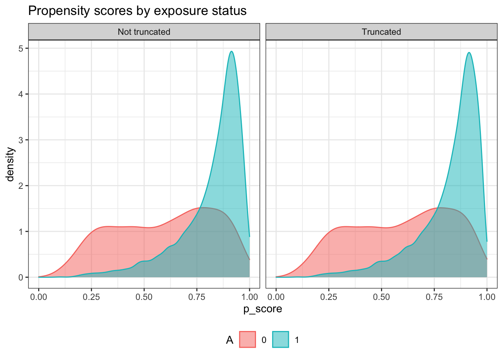
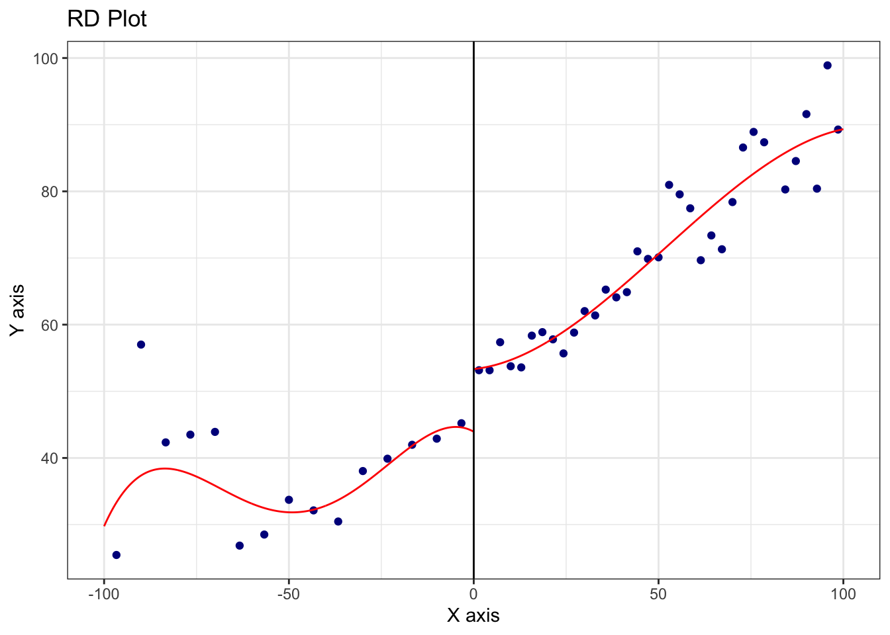
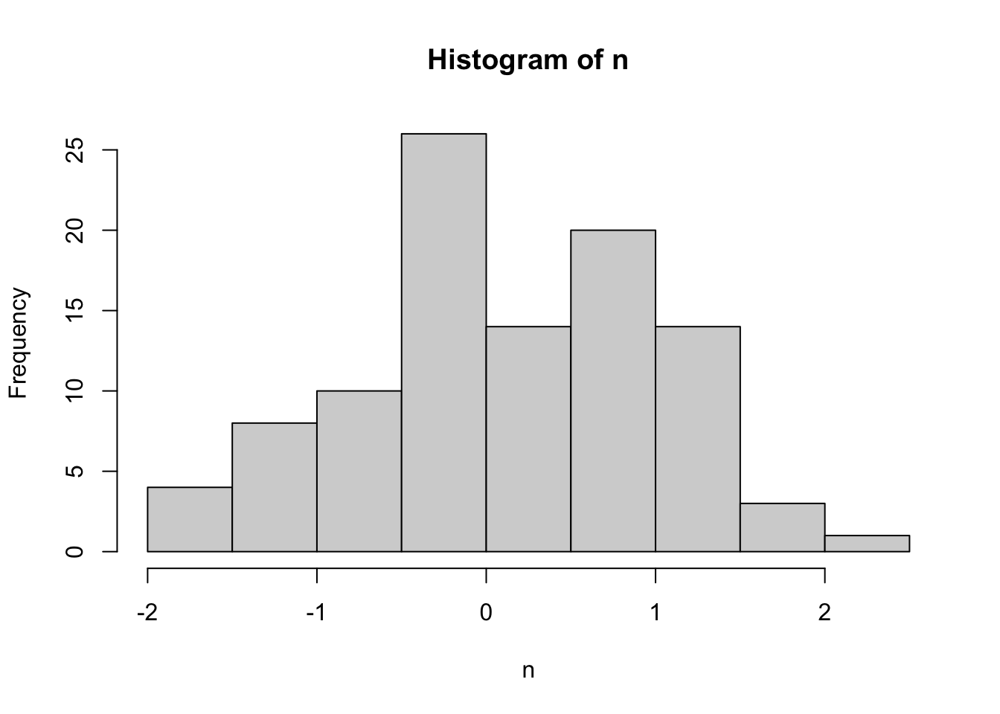
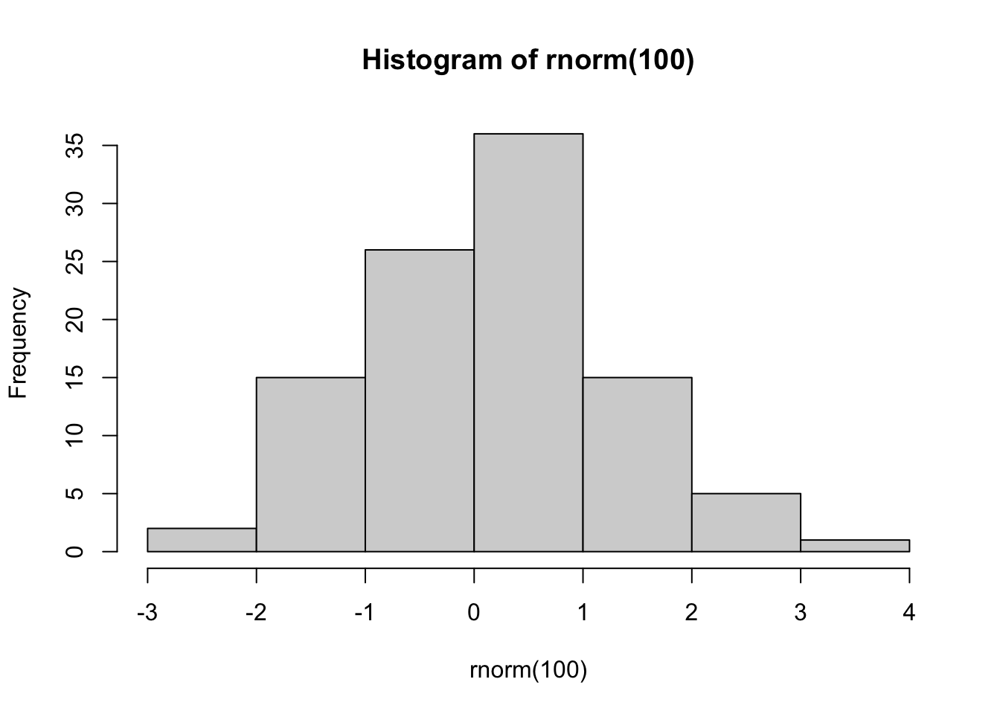

Chapter 6 線形モデルの推定
関心のあるパラメータ\(\tau(X)=E[Y|d,X]-E[Y|d',X]\)を埋め込んだ線形モデルを推定する。
- 典型的には、\(E[Y|D,X]\)を線形近似し、推定する。
\[E[Y|D=d,X=x]=\underbrace{\tau}_{Interest\ parameter}\times d+\underbrace{f(x)}_{Nuisance\ function}\] - \(f(X)=\beta_0 + \beta_1 X_1 + ...+\beta_LX_L\)
\(\tau\)について点推定だけでなく、信頼区間も推定する。
Chapter 6.2 : 前処理なしに線形モデルを推定し、信頼区間を計算する方法を紹介
Chapter 6.3 : 近似モデルの定式化への依存度を下げるために、マッチング法を用いた前処理を導入
Chapter 6.4 : 推定結果の表によるまとめ、可視化、および複数の推定結果を効率的に保存する方法を紹介
6.1 パッケージ & データ
library(tidyverse)
library(AER)
library(estimatr)
library(MatchIt)
data("NMES1988")
raw <- na.omit(NMES1988)6.2 線形モデルの推定
\(\tau(x)=\tau,f(x)=\beta_0+\beta_1x_1+...+\beta_Lx_L\)と特定化
サンプル内MSEを最大化するように推定
robust standard errorを計算するためにestimatrパッケージ(Blair et al. 2021)を利用
lm_robust関数で推定
lm_robust(visits ~ insurance + region + age + afam + gender + school + income + employed + married,
data = raw)## Estimate Std. Error t value Pr(>|t|) CI Lower
## (Intercept) 4.32086605 1.30928537 3.3001713 9.739642e-04 1.75400683
## insuranceyes 0.96591490 0.24785140 3.8971533 9.877947e-05 0.48000123
## regionnortheast 0.34814737 0.30392728 1.1454957 2.520663e-01 -0.24770327
## regionmidwest -0.40583622 0.25526934 -1.5898354 1.119439e-01 -0.90629278
## regionwest 0.57163030 0.30418463 1.8792215 6.028038e-02 -0.02472489
## age 0.04293421 0.15977094 0.2687235 7.881551e-01 -0.27029737
## afamyes -0.39294341 0.34701206 -1.1323624 2.575439e-01 -1.07326195
## gendermale -0.46726544 0.22050124 -2.1191057 3.413748e-02 -0.89955902
## school 0.08475793 0.03108035 2.7270588 6.415540e-03 0.02382479
## income -0.04678801 0.03712934 -1.2601357 2.076873e-01 -0.11958023
## employedyes -0.34186375 0.42407955 -0.8061312 4.202108e-01 -1.17327342
## marriedyes -0.29559842 0.23244624 -1.2716851 2.035523e-01 -0.75131020
## CI Upper DF
## (Intercept) 6.88772528 4394
## insuranceyes 1.45182856 4394
## regionnortheast 0.94399802 4394
## regionmidwest 0.09462034 4394
## regionwest 1.16798549 4394
## age 0.35616578 4394
## afamyes 0.28737512 4394
## gendermale -0.03497187 4394
## school 0.14569108 4394
## income 0.02600421 4394
## employedyes 0.48954591 4394
## marriedyes 0.16011336 4394線形モデルによる推定は、いくつかの問題がある
異なるグループ間で、\(X\)の分布が異なる場合、回帰式の定式化に強く依存する
一般に平均効果ではなく、加重平均が推計される
サンプルサイズに比べて、少数のコントロール変数を導入できない
以下ではマッチング法、機械学手法を用いた頑強な推定を目指す
6.2.1 RCTデータへの応用
原因変数が完全にランダム化されている場合、因果効果の識別を目的に回帰分析を応用する必要はない
因果効果の推定の改善、効率性向上、を目的として線形モデルの利用は議論されてきた。(Freedman and others 2008; Freedman 2008)
(Lin and others 2013)は、以下のような交差項を導入したモデルを用いることで、平均の差の推定に比べて、漸近的効率性が悪化することはない（同等か改善する）ことを示した
\[E[Y|D,X]=\beta_{D}\times D+\beta_1\times X_1+...+\beta_L\times X_L\]
\[+\underbrace{\beta_{1D}\times D\times X_1+...+\beta_{LD}\times D\times X_L}_{交差項}\]
6.3 マッチング法による修正
回帰を行う事前準備としてマッチング法を利用する
重回帰が持つ関数形への依存度を減らせる (Daniel E. Ho et al. 2007)
MathItパッケージ (Daniel E. Ho et al. 2011)を利用
多数のマッチング法が実装されている
6.3.1 Exact matching
\(X\)が完全に同じサンプル同士をマッチングする
原因変数の分布に偏りがある場合（本例ではコントロールグループが少ない）、少ないグループ内での平均効果(Average treatment effect for treat または control)の推定を目指すことでマッチできないサンプルを減らすことが期待できる。
fit.m <- matchit(insurance ~ region + age + afam + gender + school+ married + employed,
data = raw,
method = "exact",
estimand = "ATC"
)この例では、incomeもコントロール変数に加えた場合、Exact matching不可能（一つもマッチングできない）
マッチング結果の表示
summary(fit.m)##
## Call:
## matchit(formula = insurance ~ region + age + afam + gender +
## school + married + employed, data = raw, method = "exact",
## estimand = "ATC")
##
## Summary of Balance for All Data:
## Means Treated Means Control Std. Mean Diff. Var. Ratio
## regionnortheast 0.1938 0.1766 0.0450 .
## regionmidwest 0.2882 0.1736 0.3026 .
## regionwest 0.1818 0.1787 0.0082 .
## regionother 0.3362 0.4711 -0.2703 .
## age 7.3737 7.5021 -0.1849 0.7752
## afamno 0.9380 0.6914 0.5340 .
## afamyes 0.0620 0.3086 -0.5340 .
## genderfemale 0.5849 0.6365 -0.1073 .
## gendermale 0.4151 0.3635 0.1073 .
## school 10.9547 7.9827 0.7549 0.7464
## marriedno 0.4028 0.6315 -0.4740 .
## marriedyes 0.5972 0.3685 0.4740 .
## employedno 0.8857 0.9350 -0.2001 .
## employedyes 0.1143 0.0650 0.2001 .
## eCDF Mean eCDF Max
## regionnortheast 0.0172 0.0172
## regionmidwest 0.1146 0.1146
## regionwest 0.0031 0.0031
## regionother 0.1349 0.1349
## age 0.0357 0.0936
## afamno 0.2467 0.2467
## afamyes 0.2467 0.2467
## genderfemale 0.0516 0.0516
## gendermale 0.0516 0.0516
## school 0.1564 0.3248
## marriedno 0.2287 0.2287
## marriedyes 0.2287 0.2287
## employedno 0.0493 0.0493
## employedyes 0.0493 0.0493
##
##
## Summary of Balance for Matched Data:
## Means Treated Means Control Std. Mean Diff. Var. Ratio
## regionnortheast 0.2107 0.2107 0 .
## regionmidwest 0.2201 0.2201 0 .
## regionwest 0.1384 0.1384 0 .
## regionother 0.4308 0.4308 0 .
## age 7.3296 7.3296 0 0.9998
## afamno 0.9434 0.9434 0 .
## afamyes 0.0566 0.0566 0 .
## genderfemale 0.6887 0.6887 0 .
## gendermale 0.3113 0.3113 0 .
## school 9.9277 9.9277 0 0.9998
## marriedno 0.5283 0.5283 0 .
## marriedyes 0.4717 0.4717 0 .
## employedno 0.9560 0.9560 0 .
## employedyes 0.0440 0.0440 0 .
## eCDF Mean eCDF Max Std. Pair Dist.
## regionnortheast 0 0 0
## regionmidwest 0 0 0
## regionwest 0 0 0
## regionother 0 0 0
## age 0 0 0
## afamno 0 0 0
## afamyes 0 0 0
## genderfemale 0 0 0
## gendermale 0 0 0
## school 0 0 0
## marriedno 0 0 0
## marriedyes 0 0 0
## employedno 0 0 0
## employedyes 0 0 0
##
## Percent Balance Improvement:
## Std. Mean Diff. Var. Ratio eCDF Mean eCDF Max
## regionnortheast 100 . 100 100
## regionmidwest 100 . 100 100
## regionwest 100 . 100 100
## regionother 100 . 100 100
## age 100 99.9 100 100
## afamno 100 . 100 100
## afamyes 100 . 100 100
## genderfemale 100 . 100 100
## gendermale 100 . 100 100
## school 100 99.9 100 100
## marriedno 100 . 100 100
## marriedyes 100 . 100 100
## employedno 100 . 100 100
## employedyes 100 . 100 100
##
## Sample Sizes:
## Control Treated
## All 985 3421.
## Matched (ESS) 318 338.39
## Matched 318 624.
## Unmatched 667 2797.
## Discarded 0 0.Sample sizesにて、マッチングできなかったサンプル数（985のコントロールグループ中、667サンプルがマッチングできなかった）が確認できる
マッチング結果の図示
fit.m |>
summary() |>
plot(xlim = c(0,2))
- マッチング結果を変数として含んだデータを作成
df <- match.data(fit.m)“subclass”: マッチングしたグループ
“weights”：マッチング後の推計に用いるウェイト
マッチングしたデータを用いた推定
- 新たに作成されるweight (defaltではweights)を用いた、加重推定で実装
lm_robust(visits ~ insurance,
df,
weights = weights)## Estimate Std. Error t value Pr(>|t|) CI Lower CI Upper DF
## (Intercept) 4.707547 0.2978972 15.802589 4.605531e-50 4.1229266 5.292168 940
## insuranceyes 1.481104 0.4842812 3.058355 2.288589e-03 0.5307064 2.431501 9406.3.2 Coarsened exact matching
Coarsened exact matching(Iacus, King, and Porro 2012)の実装
- 連続変数をカテゴリー変数化することで、マッチングできるサンプルサイズを増やすことが期待できる
fit.m <- matchit(insurance ~ region + age + afam + gender + school+ married + employed + income,
data = raw,
method = "cem",
estimand = "ATC")- マッチング結果
summary(fit.m)##
## Call:
## matchit(formula = insurance ~ region + age + afam + gender +
## school + married + employed + income, data = raw, method = "cem",
## estimand = "ATC")
##
## Summary of Balance for All Data:
## Means Treated Means Control Std. Mean Diff. Var. Ratio
## regionnortheast 0.1938 0.1766 0.0450 .
## regionmidwest 0.2882 0.1736 0.3026 .
## regionwest 0.1818 0.1787 0.0082 .
## regionother 0.3362 0.4711 -0.2703 .
## age 7.3737 7.5021 -0.1849 0.7752
## afamno 0.9380 0.6914 0.5340 .
## afamyes 0.0620 0.3086 -0.5340 .
## genderfemale 0.5849 0.6365 -0.1073 .
## gendermale 0.4151 0.3635 0.1073 .
## school 10.9547 7.9827 0.7549 0.7464
## marriedno 0.4028 0.6315 -0.4740 .
## marriedyes 0.5972 0.3685 0.4740 .
## employedno 0.8857 0.9350 -0.2001 .
## employedyes 0.1143 0.0650 0.2001 .
## income 2.7759 1.6630 0.5889 2.7193
## eCDF Mean eCDF Max
## regionnortheast 0.0172 0.0172
## regionmidwest 0.1146 0.1146
## regionwest 0.0031 0.0031
## regionother 0.1349 0.1349
## age 0.0357 0.0936
## afamno 0.2467 0.2467
## afamyes 0.2467 0.2467
## genderfemale 0.0516 0.0516
## gendermale 0.0516 0.0516
## school 0.1564 0.3248
## marriedno 0.2287 0.2287
## marriedyes 0.2287 0.2287
## employedno 0.0493 0.0493
## employedyes 0.0493 0.0493
## income 0.1920 0.3244
##
##
## Summary of Balance for Matched Data:
## Means Treated Means Control Std. Mean Diff. Var. Ratio
## regionnortheast 0.1663 0.1663 -0.0000 .
## regionmidwest 0.2026 0.2026 -0.0000 .
## regionwest 0.1471 0.1471 -0.0000 .
## regionother 0.4840 0.4840 -0.0000 .
## age 7.3175 7.3117 0.0084 0.9786
## afamno 0.8486 0.8486 0.0000 .
## afamyes 0.1514 0.1514 -0.0000 .
## genderfemale 0.6652 0.6652 -0.0000 .
## gendermale 0.3348 0.3348 -0.0000 .
## school 9.2821 9.2601 0.0056 0.9798
## marriedno 0.5458 0.5458 -0.0000 .
## marriedyes 0.4542 0.4542 -0.0000 .
## employedno 0.9659 0.9659 0.0000 .
## employedyes 0.0341 0.0341 -0.0000 .
## income 1.6947 1.4311 0.1395 0.9181
## eCDF Mean eCDF Max Std. Pair Dist.
## regionnortheast 0.0000 0.0000 0.0000
## regionmidwest 0.0000 0.0000 0.0000
## regionwest 0.0000 0.0000 0.0000
## regionother 0.0000 0.0000 0.0000
## age 0.0040 0.0237 0.1533
## afamno 0.0000 0.0000 0.0000
## afamyes 0.0000 0.0000 0.0000
## genderfemale 0.0000 0.0000 0.0000
## gendermale 0.0000 0.0000 0.0000
## school 0.0018 0.0158 0.0211
## marriedno 0.0000 0.0000 0.0000
## marriedyes 0.0000 0.0000 0.0000
## employedno 0.0000 0.0000 0.0000
## employedyes 0.0000 0.0000 0.0000
## income 0.0845 0.1898 0.3971
##
## Percent Balance Improvement:
## Std. Mean Diff. Var. Ratio eCDF Mean eCDF Max
## regionnortheast 100.0 . 100.0 100.0
## regionmidwest 100.0 . 100.0 100.0
## regionwest 100.0 . 100.0 100.0
## regionother 100.0 . 100.0 100.0
## age 95.5 91.5 88.8 74.7
## afamno 100.0 . 100.0 100.0
## afamyes 100.0 . 100.0 100.0
## genderfemale 100.0 . 100.0 100.0
## gendermale 100.0 . 100.0 100.0
## school 99.3 93.0 98.8 95.1
## marriedno 100.0 . 100.0 100.0
## marriedyes 100.0 . 100.0 100.0
## employedno 100.0 . 100.0 100.0
## employedyes 100.0 . 100.0 100.0
## income 76.3 91.5 56.0 41.5
##
## Sample Sizes:
## Control Treated
## All 985 3421.
## Matched (ESS) 469 438.65
## Matched 469 1196.
## Unmatched 516 2225.
## Discarded 0 0.- 可視化
fit.m |>
summary() |>
plot(xlim = c(0,2))
Exact matching以外のマッチング法では、マッチングされたサンプル内でも\(X\)の違いが残る
- マッチングされたサンプル内で回帰分析を行うことで、再調整する
df <- match.data(fit.m)
lm_robust(visits ~ insurance + region + age + afam + gender + school+ married + employed + income,
df,
weights = weights)## Estimate Std. Error t value Pr(>|t|) CI Lower
## (Intercept) 0.07031894 3.1830746 0.02209152 9.823776e-01 -6.17296408
## insuranceyes 1.63803136 0.4111893 3.98364310 7.081498e-05 0.83152463
## regionnortheast 0.37332676 0.6686084 0.55836385 5.766716e-01 -0.93808186
## regionmidwest -1.01255860 0.4957411 -2.04251498 4.125884e-02 -1.98490525
## regionwest 1.46720871 0.9811751 1.49535874 1.350117e-01 -0.45726821
## age 0.54604701 0.4139224 1.31920151 1.872845e-01 -0.26582038
## afamyes -1.09566719 0.8327555 -1.31571289 1.884529e-01 -2.72903401
## gendermale -0.77640463 0.5006594 -1.55076411 1.211496e-01 -1.75839805
## school 0.16064654 0.1041628 1.54226418 1.232008e-01 -0.04365837
## marriedyes -0.16566757 0.5419170 -0.30570652 7.598666e-01 -1.22858372
## employedyes -1.47819362 1.1718433 -1.26142599 2.073334e-01 -3.77664729
## income -0.36310301 0.1778814 -2.04126501 4.138301e-02 -0.71199956
## CI Upper DF
## (Intercept) 6.31360197 1653
## insuranceyes 2.44453809 1653
## regionnortheast 1.68473538 1653
## regionmidwest -0.04021195 1653
## regionwest 3.39168562 1653
## age 1.35791440 1653
## afamyes 0.53769963 1653
## gendermale 0.20558879 1653
## school 0.36495144 1653
## marriedyes 0.89724858 1653
## employedyes 0.82026004 1653
## income -0.01420647 16536.3.3 Propensity score with subclassification
Coarsened exact matchingでもマッチングできないサンプルが多数出てくる可能性
- とくに\(X\)が大量にある場合
1次元の距離指標を用いて、マッチングを行う
- 距離指標としては、Mahalanobis’ Distance、Propensity scoreなど
ここではPropensity score \(p_d(X)\)を用いる
\[p_d(X)\equiv \Pr[D=d|X]\]
属性\(X\)のユニットの中で、原因変数の値が\(d\)である人の割合
未知の場合、データから推定する必要がある
推定された傾向スコアを用いたStratification マッチング
- ロジットにて傾向スコアを推定
fit.m <- matchit(insurance ~ region + age + afam + gender + school+ married + employed + income,
data = raw,
method = "subclass",
estimand = "ATC"
)- マッチング結果
summary(fit.m)##
## Call:
## matchit(formula = insurance ~ region + age + afam + gender +
## school + married + employed + income, data = raw, method = "subclass",
## estimand = "ATC")
##
## Summary of Balance for All Data:
## Means Treated Means Control Std. Mean Diff. Var. Ratio
## distance 0.8230 0.6148 0.8783 0.3568
## regionnortheast 0.1938 0.1766 0.0450 .
## regionmidwest 0.2882 0.1736 0.3026 .
## regionwest 0.1818 0.1787 0.0082 .
## regionother 0.3362 0.4711 -0.2703 .
## age 7.3737 7.5021 -0.1849 0.7752
## afamno 0.9380 0.6914 0.5340 .
## afamyes 0.0620 0.3086 -0.5340 .
## genderfemale 0.5849 0.6365 -0.1073 .
## gendermale 0.4151 0.3635 0.1073 .
## school 10.9547 7.9827 0.7549 0.7464
## marriedno 0.4028 0.6315 -0.4740 .
## marriedyes 0.5972 0.3685 0.4740 .
## employedno 0.8857 0.9350 -0.2001 .
## employedyes 0.1143 0.0650 0.2001 .
## income 2.7759 1.6630 0.5889 2.7193
## eCDF Mean eCDF Max
## distance 0.2750 0.4285
## regionnortheast 0.0172 0.0172
## regionmidwest 0.1146 0.1146
## regionwest 0.0031 0.0031
## regionother 0.1349 0.1349
## age 0.0357 0.0936
## afamno 0.2467 0.2467
## afamyes 0.2467 0.2467
## genderfemale 0.0516 0.0516
## gendermale 0.0516 0.0516
## school 0.1564 0.3248
## marriedno 0.2287 0.2287
## marriedyes 0.2287 0.2287
## employedno 0.0493 0.0493
## employedyes 0.0493 0.0493
## income 0.1920 0.3244
##
## Summary of Balance Across Subclasses
## Means Treated Means Control Std. Mean Diff. Var. Ratio
## distance 0.6264 0.6148 0.0486 0.9752
## regionnortheast 0.1752 0.1766 -0.0039 .
## regionmidwest 0.1941 0.1736 0.0542 .
## regionwest 0.1915 0.1787 0.0335 .
## regionother 0.4392 0.4711 -0.0638 .
## age 7.4961 7.5021 -0.0087 0.8894
## afamno 0.6956 0.6914 0.0092 .
## afamyes 0.3044 0.3086 -0.0092 .
## genderfemale 0.5977 0.6365 -0.0807 .
## gendermale 0.4023 0.3635 0.0807 .
## school 8.0956 7.9827 0.0287 1.0967
## marriedno 0.6000 0.6315 -0.0653 .
## marriedyes 0.4000 0.3685 0.0653 .
## employedno 0.9157 0.9350 -0.0782 .
## employedyes 0.0843 0.0650 0.0782 .
## income 1.9086 1.6630 0.1300 1.3758
## eCDF Mean eCDF Max
## distance 0.0133 0.0457
## regionnortheast 0.0015 0.0015
## regionmidwest 0.0205 0.0205
## regionwest 0.0128 0.0128
## regionother 0.0319 0.0319
## age 0.0133 0.0339
## afamno 0.0042 0.0042
## afamyes 0.0042 0.0042
## genderfemale 0.0388 0.0388
## gendermale 0.0388 0.0388
## school 0.0109 0.0311
## marriedno 0.0315 0.0315
## marriedyes 0.0315 0.0315
## employedno 0.0193 0.0193
## employedyes 0.0193 0.0193
## income 0.0622 0.1485
##
## Percent Balance Improvement:
## Std. Mean Diff. Var. Ratio eCDF Mean eCDF Max
## distance 94.5 -173.3 95.2 89.3
## regionnortheast 91.3 . 91.3 91.3
## regionmidwest 82.1 . 82.1 82.1
## regionwest -309.1 . -309.1 -309.1
## regionother 76.4 . 76.4 76.4
## age 95.3 -14.7 62.7 63.8
## afamno 98.3 . 98.3 98.3
## afamyes 98.3 . 98.3 98.3
## genderfemale 24.8 . 24.8 24.8
## gendermale 24.8 . 24.8 24.8
## school 96.2 -46.9 93.1 90.4
## marriedno 86.2 . 86.2 86.2
## marriedyes 86.2 . 86.2 86.2
## employedno 60.9 . 60.9 60.9
## employedyes 60.9 . 60.9 60.9
## income 77.9 49.4 67.6 54.2
##
## Sample Sizes:
## Control Treated
## All 985 3421.
## Matched (ESS) 985 999.44
## Matched 985 3421.
## Unmatched 0 0.
## Discarded 0 0.- マッチング結果の図示
fit.m |>
summary() |>
plot(xlim = c(0,2))- マッチングしたデータを用いた推定
df <- match.data(fit.m) # マッチング結果を含んだ
lm_robust(visits ~ insurance + region + age + afam + gender + school+ married + employed,
df,
weights = weights)## Estimate Std. Error t value Pr(>|t|) CI Lower
## (Intercept) 2.69483196 1.56827266 1.7183440 0.085804312 -0.37977270
## insuranceyes 0.86429413 0.30326930 2.8499229 0.004393338 0.26973348
## regionnortheast 0.32880379 0.47161144 0.6971921 0.485719430 -0.59579228
## regionmidwest -0.72444843 0.38788012 -1.8677122 0.061868702 -1.48488891
## regionwest 0.36858393 0.43102618 0.8551312 0.392525130 -0.47644456
## age 0.32472400 0.19637511 1.6535904 0.098282174 -0.06027016
## afamyes -0.73188348 0.46736086 -1.5659923 0.117422424 -1.64814626
## gendermale -1.02017368 0.34142463 -2.9879909 0.002823707 -1.68953801
## school 0.05542150 0.04126024 1.3432182 0.179270695 -0.02546936
## marriedyes -0.07195191 0.30991060 -0.2321699 0.816416863 -0.67953285
## employedyes -0.54902900 0.45865317 -1.1970461 0.231353145 -1.44822033
## CI Upper DF
## (Intercept) 5.76943662 4395
## insuranceyes 1.45885478 4395
## regionnortheast 1.25339987 4395
## regionmidwest 0.03599205 4395
## regionwest 1.21361243 4395
## age 0.70971816 4395
## afamyes 0.18437930 4395
## gendermale -0.35080936 4395
## school 0.13631236 4395
## marriedyes 0.53562902 4395
## employedyes 0.35016234 43956.3.4 Nearest neighbor matching
傾向スコアを用いた最近旁マッチング
傾向スコアがもっとも似ているサンプルとマッチングする
デフォルトでは、Replacement無しのマッチングを行う
fit.m <- matchit(insurance ~ region + age + afam + gender + school+ married + employed + income,
data = raw,
method = "nearest",
estimand = "ATC"
)- マッチング結果
summary(fit.m)##
## Call:
## matchit(formula = insurance ~ region + age + afam + gender +
## school + married + employed + income, data = raw, method = "nearest",
## estimand = "ATC")
##
## Summary of Balance for All Data:
## Means Treated Means Control Std. Mean Diff. Var. Ratio
## distance 0.8230 0.6148 0.8783 0.3568
## regionnortheast 0.1938 0.1766 0.0450 .
## regionmidwest 0.2882 0.1736 0.3026 .
## regionwest 0.1818 0.1787 0.0082 .
## regionother 0.3362 0.4711 -0.2703 .
## age 7.3737 7.5021 -0.1849 0.7752
## afamno 0.9380 0.6914 0.5340 .
## afamyes 0.0620 0.3086 -0.5340 .
## genderfemale 0.5849 0.6365 -0.1073 .
## gendermale 0.4151 0.3635 0.1073 .
## school 10.9547 7.9827 0.7549 0.7464
## marriedno 0.4028 0.6315 -0.4740 .
## marriedyes 0.5972 0.3685 0.4740 .
## employedno 0.8857 0.9350 -0.2001 .
## employedyes 0.1143 0.0650 0.2001 .
## income 2.7759 1.6630 0.5889 2.7193
## eCDF Mean eCDF Max
## distance 0.2750 0.4285
## regionnortheast 0.0172 0.0172
## regionmidwest 0.1146 0.1146
## regionwest 0.0031 0.0031
## regionother 0.1349 0.1349
## age 0.0357 0.0936
## afamno 0.2467 0.2467
## afamyes 0.2467 0.2467
## genderfemale 0.0516 0.0516
## gendermale 0.0516 0.0516
## school 0.1564 0.3248
## marriedno 0.2287 0.2287
## marriedyes 0.2287 0.2287
## employedno 0.0493 0.0493
## employedyes 0.0493 0.0493
## income 0.1920 0.3244
##
##
## Summary of Balance for Matched Data:
## Means Treated Means Control Std. Mean Diff. Var. Ratio
## distance 0.6835 0.6148 0.2897 0.5687
## regionnortheast 0.1939 0.1766 0.0453 .
## regionmidwest 0.1878 0.1736 0.0375 .
## regionwest 0.1949 0.1787 0.0424 .
## regionother 0.4234 0.4711 -0.0956 .
## age 7.4870 7.5021 -0.0218 0.8702
## afamno 0.8010 0.6914 0.2374 .
## afamyes 0.1990 0.3086 -0.2374 .
## genderfemale 0.6173 0.6365 -0.0401 .
## gendermale 0.3827 0.3635 0.0401 .
## school 8.5736 7.9827 0.1501 0.8404
## marriedno 0.5909 0.6315 -0.0842 .
## marriedyes 0.4091 0.3685 0.0842 .
## employedno 0.9228 0.9350 -0.0494 .
## employedyes 0.0772 0.0650 0.0494 .
## income 1.7858 1.6630 0.0650 0.7674
## eCDF Mean eCDF Max Std. Pair Dist.
## distance 0.0309 0.1827 0.2898
## regionnortheast 0.0173 0.0173 0.7800
## regionmidwest 0.0142 0.0142 0.7130
## regionwest 0.0162 0.0162 0.7897
## regionother 0.0477 0.0477 0.9173
## age 0.0133 0.0365 1.0470
## afamno 0.1096 0.1096 0.4879
## afamyes 0.1096 0.1096 0.4879
## genderfemale 0.0193 0.0193 0.9224
## gendermale 0.0193 0.0193 0.9224
## school 0.0318 0.0924 0.7555
## marriedno 0.0406 0.0406 0.8292
## marriedyes 0.0406 0.0406 0.8292
## employedno 0.0122 0.0122 0.5437
## employedyes 0.0122 0.0122 0.5437
## income 0.0615 0.1472 0.7354
##
## Percent Balance Improvement:
## Std. Mean Diff. Var. Ratio eCDF Mean eCDF Max
## distance 67.0 45.2 88.7 57.4
## regionnortheast -0.6 . -0.6 -0.6
## regionmidwest 87.6 . 87.6 87.6
## regionwest -417.6 . -417.6 -417.6
## regionother 64.6 . 64.6 64.6
## age 88.2 45.4 62.7 60.9
## afamno 55.5 . 55.5 55.5
## afamyes 55.5 . 55.5 55.5
## genderfemale 62.6 . 62.6 62.6
## gendermale 62.6 . 62.6 62.6
## school 80.1 40.6 79.6 71.6
## marriedno 82.2 . 82.2 82.2
## marriedyes 82.2 . 82.2 82.2
## employedno 75.3 . 75.3 75.3
## employedyes 75.3 . 75.3 75.3
## income 89.0 73.5 67.9 54.6
##
## Sample Sizes:
## Control Treated
## All 985 3421
## Matched 985 985
## Unmatched 0 2436
## Discarded 0 0- マッチング結果の図示
fit.m |>
summary() |>
plot(xlim = c(0,2))
マッチングしたデータを用いた推定
- replacement無しの場合ｍマッチングしたペア(subclass)でクラスタリングしたrobust standard errorの利用を推奨 (Abadie and Spiess 2021)
df <- match.data(fit.m) # マッチング結果を含んだ
lm_robust(visits ~ insurance + region + age + afam + gender + school+ married + employed + income,
df,
clusters = subclass,
weights = weights)## Estimate Std. Error t value Pr(>|t|) CI Lower
## (Intercept) 4.28376769 1.80365512 2.3750481 0.0179117218 0.74034506
## insuranceyes 0.88089215 0.27930681 3.1538513 0.0016606844 0.33277940
## regionnortheast 0.11745650 0.43169716 0.2720808 0.7856724490 -0.73071167
## regionmidwest -1.09402106 0.34563753 -3.1652265 0.0016483956 -1.77317575
## regionwest 0.67689981 0.41977554 1.6125280 0.1074679565 -0.14780947
## age 0.15738399 0.21874416 0.7194889 0.4721765473 -0.27238904
## afamyes -0.65822959 0.31824549 -2.0683077 0.0391049262 -1.28343451
## gendermale -1.12983896 0.30900225 -3.6564101 0.0002772051 -1.73664207
## school 0.04179621 0.03992562 1.0468521 0.2957240492 -0.03666544
## marriedyes 0.26953526 0.28939461 0.9313762 0.3520209096 -0.29877535
## employedyes -0.28682948 0.69900943 -0.4103371 0.6821000780 -1.66715900
## income -0.18287346 0.07454076 -2.4533350 0.0158456243 -0.33072080
## CI Upper DF
## (Intercept) 7.82719031 515.2437
## insuranceyes 1.42900489 973.5096
## regionnortheast 0.96562467 498.9836
## regionmidwest -0.41486638 478.5757
## regionwest 1.50160909 508.1414
## age 0.58715703 499.0168
## afamyes -0.03302466 519.9827
## gendermale -0.52303586 627.8155
## school 0.12025787 454.6173
## marriedyes 0.83784587 621.0176
## employedyes 1.09350005 162.2410
## income -0.03502611 102.22466.4 付録：推定結果の保存と表示
6.4.1 推計結果表
tidy関数により推定結果data.frameに変化することで、kable関数(knitrパッケージ)による推計結果表の整形、geom_pointrange関数による可視化が可能
点推定値(estimate)、標準誤差(std.error)のみを残した推計結果表
library(knitr)
lm_robust(visits ~ insurance + region + age + afam + gender + school,
data = raw
) |>
tidy() |>
select(term, estimate, std.error) |>
kable(digits = 2)| term | estimate | std.error |
|---|---|---|
| (Intercept) | 3.65 | 1.23 |
| insuranceyes | 0.90 | 0.25 |
| regionnortheast | 0.36 | 0.30 |
| regionmidwest | -0.40 | 0.25 |
| regionwest | 0.55 | 0.30 |
| age | 0.12 | 0.15 |
| afamyes | -0.35 | 0.34 |
| gendermale | -0.63 | 0.21 |
| school | 0.07 | 0.03 |
lm_robust(visits ~ insurance + region + age + afam + gender + school,
data = raw
) |>
tidy() |>
select(term, estimate, std.error) |>
filter(term == "insuranceyes") |>
kable(digits = 2)| term | estimate | std.error |
|---|---|---|
| insuranceyes | 0.9 | 0.25 |
6.4.2 Dot-and-Whisker plotによる可視化
- Dot-and-Whisker図により点推定量と信頼区間を可視化
lm_robust(visits ~ insurance + region + age + afam + gender + school,
data = raw) |>
tidy() |>
filter(term != "(Intercept)"
) |>
ggplot(aes(y = term,
x = estimate,
xmin = conf.low,
xmax = conf.high)
) +
geom_pointrange() +
geom_vline(xintercept = 0)
6.4.3 サブサンプル分析結果の整理と可視化
条件付き平均効果\(=E[Y_i(d)-Y_i(d')|X_i=x]\)
因果効果の異質性を議論する上で、有力な要約値
少数の\(x\)を分析者が事前設定する場合、\(x\)についてサブサンプルを作成し、推定すればOK
tidyverseパッケージに含まれるnest/unnest関数を用いれば、整理したサブサンプル分析が可能でかつ、容易に可視化/表化できる
推定結果を入子リスト形式に保存し、通常のデータフレーム形式に展開、可視化/表化する手順踏む
関数をリストの構成要素に逐次適用する汎関数(map)を利用することで、同じデータフレーム内に結果を保存できる
以下では“region”ごとに条件付き平均効果を推定する
regression <-
function(df){
lm_robust(visits ~ insurance + age + afam + gender + school + income + employed + married,
data = df) |>
tidy() |>
filter(term == "insuranceyes")
} # 推計し、関心のあるパラメータのみからなるデータフレーム化する関数
result <-
raw |>
group_by(region) |> # regoinごとにサブグループ化
nest() |> # regionごとに入子データを作成
mutate(model = map(data,regression)) |> # 推定し、モデルとして結果をほぞpン
unnest() |> # 入子構造を解消
distinct(region,
estimate,
conf.low,
conf.high) # regionごとの結果表を作成- データフレームなので、容易に可視化できる
result |>
ggplot(aes(x = estimate,
y = region,
xmin = conf.low,
xmax = conf.high)
) +
geom_pointrange() +
geom_vline(xintercept = 0)
6.4.4 複数の推定結果の整理と可視化
- listで保存し、data.frameに展開、という手順はより一般に複数の推定結果を整理することに使える
list <- list() # 空のリストを作成
list[[1]] <-
lm_robust(visits ~ insurance + age + afam + gender + school + income + employed + married +region,
data = raw) |>
tidy() |>
filter(term == "insuranceyes") # 推定結果をリストに保存
list[[2]] <-
lm_robust(nvisits ~ insurance + age + afam + gender + school + income + employed + married +region,
data = raw) |>
tidy() |>
filter(term == "insuranceyes") # 別の結果を保存
names(list) <- c("visits","nvisits") # 名づけ
result <-
enframe(list) |>
unnest() # データフレーム化
result |>
ggplot(aes(y = name,
x = estimate,
xmin = conf.low,
xmax = conf.high
)
) +
geom_pointrange() # 可視化